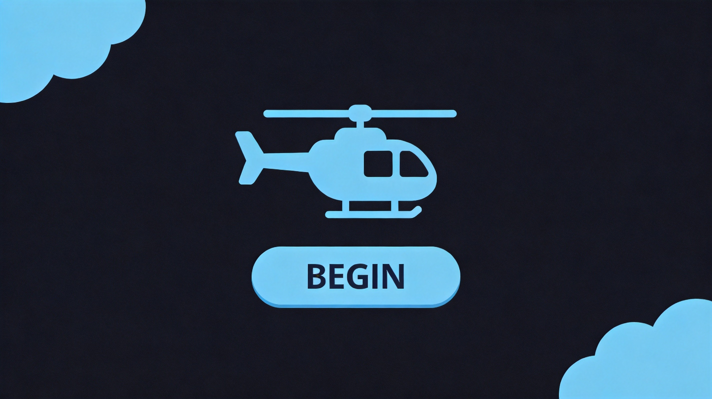
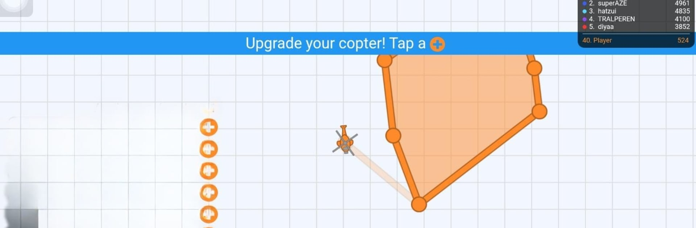
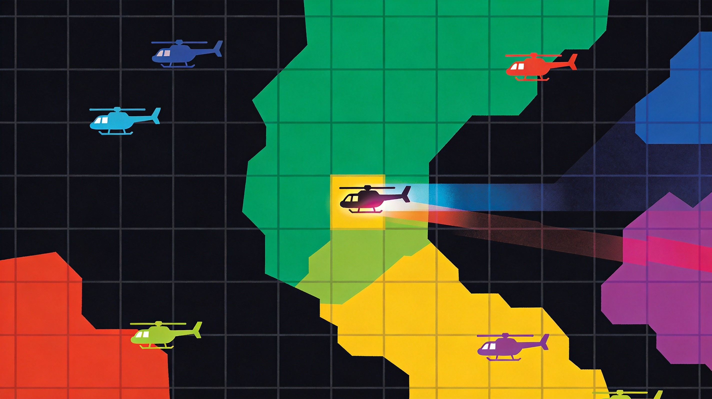
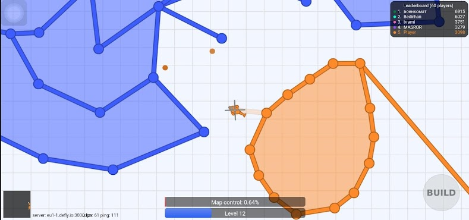

Alright, let's talk Defly.io — the game that turns you into a tiny helicopter pilot fighting over colored squares on a massive map. If you've ever played Paper.io, you already kind of know the territory-capture mechanic. But Defly throws helicopters, weapons, and actual combat into the mix, and that changes everything. This guide breaks down how to actually get good at it, from basic movement to holding massive territories under fire.
🎯 Game Basics

What Is Defly.io?
Defly.io is an .io game where you control a mini helicopter in a grid-based arena. Your goal is to capture territory by flying over empty tiles, filling them with your color. The more territory you own, the higher your score. Other players can invade your zone, destroy your structures, and steal your land — so you'd better learn to defend what you've got.
Controls
- WASD / Arrow Keys — Move your helicopter in four directions
- Left Click — Fire your primary weapon
- Right Click — Place a wall/structure (build mode)
- Space — Toggle build mode on/off
The Core Loop
Capture tiles → Expand territory → Upgrade helicopter → Defend from invaders → Repeat. Sounds simple, but the moment someone swoops into your base and starts destroying your walls, you'll realize this game has serious strategic depth.
🗺️ Territory Control

How Capture Works
Every tile on the map starts neutral (gray). When you fly over a neutral tile, it changes to your color — that's yours now. The real skill isn't just painting tiles; it's connecting your base to unclaimed territory in a way that's defensible. A sprawling, disconnected blob of tiles looks impressive but is an absolute nightmare to protect.
The Connected Base Strategy
This is the single most important concept in Defly.io. Keep all your tiles connected to a central hub. Think of it like a spider's web — everything threads back to the center. When your territory is connected, invaders have to fight through your walls to get inside. Disconnected outposts? They'll get picked off one by one, and you'll lose them all.
Expanding Smart
When expanding, try to create thick walls rather than thin lines. A single-file trail of tiles can be destroyed by a single enemy passing through. Use your build mode to place walls ahead of your expansion path, creating a protective corridor as you push outward. Then fill in the space behind you.
Never leave a trail of tiles behind you when expanding. It's a highway for enemies to infiltrate your base. Always build a protective wall first, then paint the tiles.
Strategic Corridors
Create narrow chokepoints using walls that force enemies to go through a specific entrance to reach your inner territory. Combined with turret placements (more on that below), these chokepoints become deadly kill zones.
⚔️ Combat & Weapons

Your Helicopter's Weapons
Your helicopter has a fixed forward-facing cannon. The helicopter always faces the direction of movement, so your gun shoots where you're going. This means you can't shoot behind you while retreating — plan your exits.
Weapon Types
- Machine Gun (Default) — Fast fire rate, lower damage. Good for suppressing fire and taking out enemy walls.
- Cannon (Unlocked) — Slower rate but higher damage per shot. Better for fighting other helicopters directly.
- Missiles (Upgrade) — Long range, high damage. Excellent for picking off enemies from a distance.
Fighting Other Players
When you encounter an enemy in your territory, don't panic-fire. Line up your shot, fire a burst, then reposition. The helicopter controls are tight enough that you can circle-strafe around slower opponents. Hit them a few times, break away, repeat.
If you're outgunned, retreat into your own territory where your turrets can assist. Never try to hold a firefight in neutral territory when you have backup waiting at home.
Turret Placement
Turrets are stationary defenses that auto-target enemies in range. Place them at chokepoints, near your base entrance, and along walls that enemies commonly invade through. A well-placed turret cluster can hold off multiple attackers.
Wall Combat
You can shoot enemy walls to destroy them, tile by tile. This is how you invade someone's territory — break through their walls and recolor the tiles on the other side. Destroying walls takes time, so always be aware of how exposed your structures are.
🏰 Defense Strategies
Building a Fortress
The best defensive setups in Defly.io use layered walls. Start with an outer perimeter of walls, then leave a gap, then another layer. Enemies have to break through multiple walls just to reach your inner territory, and by that point, your turrets have been lighting them up.
Wall Decay
Walls in Defly.io don't last forever. They slowly decay over time, especially in areas you don't frequently patrol. Inspect your territory regularly and repair decaying walls before enemies notice the weak points.
Patrol Routes
Even with turrets and walls, you can't just sit in your base. Patrol your perimeter every 20-30 seconds. Flying a circuit around your territory lets you spot invaders early, catch wall-breakers in the act, and add new tiles you might have missed.
The Counter-Attack
When an enemy successfully invades and starts breaking your walls, don't just defend — counter-attack. Fly directly at them, use your weapon to deal damage, and force them to either fight or flee. Most players aren't expecting resistance when they're deep in someone else's territory.
Upgrades
Focus your upgrade points on weapon damage and turret efficiency first. Speed is nice, but raw firepower and automated defense will keep your territory alive much longer. Once you've got solid defense, put points into expansion speed to grow faster.

💡 Pro Tips
- Start small. Don't try to paint half the map in your first 30 seconds. A small, well-defended territory beats a massive, undefended one every time.
- Watch the map. The minimap shows you where other players are and what colors dominate which areas. Use it to plan expansion routes away from powerful neighbors.
- Know when to retreat. If you're low on health and deep in enemy territory, just respawn. Dying costs you less than a prolonged fight you'll probably lose anyway.
- Team up. Playing with friends means coordinated defense and attack. Two helicopters working together can hold territory that three solo players couldn't.
- Be unpredictable. If you always expand in the same direction, smart players will cut you off. Vary your routes.

❓ Frequently Asked Questions

Q: How do I earn coins in Defly.io?
A: You earn coins passively by holding territory. The more tiles you own, the more coins you generate over time. Defeating other players also awards bonus coins.
Q: What's the best upgrade path for beginners?
A: Prioritize weapon damage and turret health first. These keep your territory alive. Speed and expansion upgrades come second once your base is stable.
Q: Can I play Defly.io on mobile?
A: Yes, it has mobile support with virtual joystick controls. The experience isn't as precise as keyboard and mouse, but it's fully playable.
Q: What happens when I die?
A: You respawn in a neutral area and lose all unconnected tiles. Connected territory remains yours, but you'll need to fight your way back to rejoin it.
Q: How do I destroy enemy walls efficiently?
A: Use sustained fire on a single wall section. Machine guns are best for this — the rapid fire adds up fast. Target walls at corners or junctions first, as destroying those weakens the whole structure.
Q: Is there a team mode in Defly.io?
A: Yes, team mode lets you cooperate with teammates to dominate the map. Coordinate attacks and share defensive duties for the best results.
Q: How do I find Defly.io to play?
A: Search for "Defly.io" on your browser or visit the game's official page. It's free to play directly in your browser with no downloads required.
Ready to take to the skies? Grab your helicopter, build your fortress, and show those other pilots what a real territory looks like. See you in the arena!